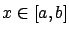

Next: 2.4.2 Legendre transformation
Up: 2.4 Hamiltonian formalism and
Previous: 2.4 Hamiltonian formalism and
Contents
Index
2.4.1 Hamilton's canonical equations
In
Section 2.3.4 we came across two quantities, which
we recall here
and for which we now introduce special symbols.
The first one was the momentum
 |
(2.27) |
which we will usually regard as a function of  associated to a given curve
associated to a given curve
 .
The second object was the Hamiltonian
.
The second object was the Hamiltonian
which is written here as a general function of four variables but also becomes
a function of
alone when evaluated along a curve. The inner product
sign
in the definition of  reflects the fact that in
the multiple-degrees-of-freedom case,
reflects the fact that in
the multiple-degrees-of-freedom case,
 and
and  are vectors.
are vectors.
The variables  and
are called the canonical variables.
Suppose now that
is an extremal, i.e., satisfies
the Euler-Lagrange equation (2.18). It turns out that the differential equations
describing the evolution
of
and
along such a curve, when written in terms of the Hamiltonian
,
take a particularly nice form. For
, we have
and
are called the canonical variables.
Suppose now that
is an extremal, i.e., satisfies
the Euler-Lagrange equation (2.18). It turns out that the differential equations
describing the evolution
of
and
along such a curve, when written in terms of the Hamiltonian
,
take a particularly nice form. For
, we have
For
, we have
where the second equality is the Euler-Lagrange equation.
In more concise form, the result
is
 |
(2.29) |
which is known as the system of Hamilton's canonical equations.
This reformulation of the Euler-Lagrange equation was proposed by Hamilton in
1835.
Since we are not assuming here that we are in the ``no
" case or the ``no
" case of Section 2.3.4, the momentum
and the Hamiltonian
need not be constant along extremals.

An important additional observation is that the partial derivative of
with respect to
is
 |
(2.30) |
where the last equality follows from the definition (2.28)
of
. This suggests that,
in addition to the canonical equations (2.30), another
necessary condition
for optimality should be that
has a stationary point as a function of
along an optimal curve. To make
this statement more precise, let us plug the following arguments into the
Hamiltonian: an arbitrary

; for
, the corresponding position  of the optimal curve; for
, the corresponding value of the momentum
of the optimal curve; for
, the corresponding value of the momentum
 . Let us keep
the last remaining argument,
, as a free variable, and relabel
it as
. Let us keep
the last remaining argument,
, as a free variable, and relabel
it as  for clarity. This yields the function
for clarity. This yields the function
 |
(2.31) |
Our claim is that this function has a stationary point when
equals  ,
the velocity of the optimal curve at
. Indeed, it is immediate to check that
,
the velocity of the optimal curve at
. Indeed, it is immediate to check that
Later we
will see that in the context of the maximum principle this
stationary point is actually an extremum, in fact, a
maximum. Moreover, the statement
about the maximum remains true when
is not necessarily
differentiable
or when
takes values in a set with a
boundary and
 on this boundary;
the basic property
is not that the derivative vanishes but that
achieves the
maximum in the above sense.
on this boundary;
the basic property
is not that the derivative vanishes but that
achieves the
maximum in the above sense.
Mathematically, the Lagrangian  and the Hamiltonian
are
related via a construction known as the Legendre transformation.
Since this transformation is classical and finds applications
in many diverse areas (optimization, geometry, physics),
we now proceed to describe it.
However, we will see that it does not quite provide the right point of view
for our future developments, and it is included here mainly for historical
reasons.
and the Hamiltonian
are
related via a construction known as the Legendre transformation.
Since this transformation is classical and finds applications
in many diverse areas (optimization, geometry, physics),
we now proceed to describe it.
However, we will see that it does not quite provide the right point of view
for our future developments, and it is included here mainly for historical
reasons.
Next: 2.4.2 Legendre transformation
Up: 2.4 Hamiltonian formalism and
Previous: 2.4 Hamiltonian formalism and
Contents
Index
Daniel
2010-12-20